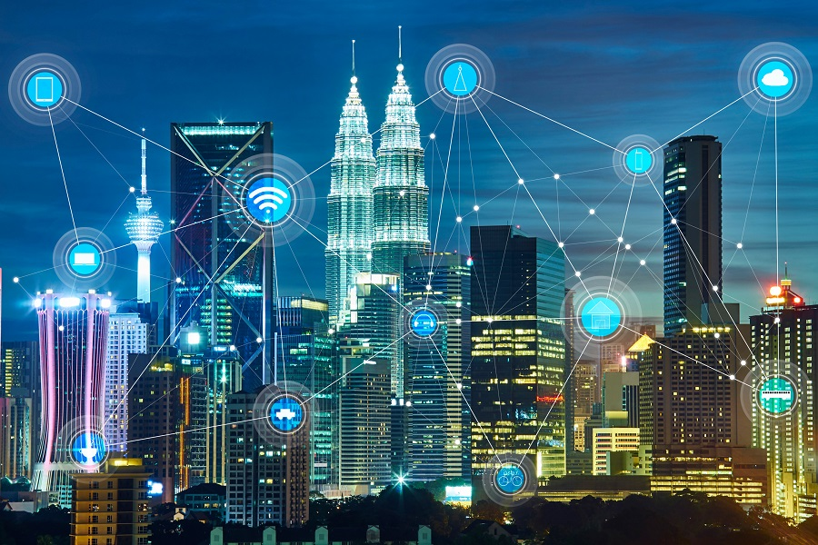

Smart City Platform
A complete concept of a smart city includes economics, environment, life, travel, security, education, core technology applications in smart cities, including sensor networks, data analysis, and automated systems. In particular, the arrival of 5G and the narrowband Internet of things nb-lot technology update. Wisdom cities are more important, driven by the good needs of urban people, and in the future we will see ubiquitous sensors that provide better connections between people and things, things and things. Coupled with the principles of monitoring, sharing and prevention, people live and live more intelligently. Intelligent city is a new view of city, a new thinking of developing city, and a continuation of digital city construction. It is of great significance in the planning, management, operation and long-term development of the city. In the early years of the construction of intelligent cities in our country, the characteristics of scattered design and self-administration have resulted in problems such as data island and it resources repeated construction and so on. Because in the past, the construction of intelligent city did not regard meeting the needs of people and the development of society as the ultimate goal. In addition, the construction of intelligent city is a multi-dimensional and systematic project, and the planning of information technology such as urban planning and intelligent city must be highly integrated. The development of modern city is based on digital driving. In the process of urban planning, the application of leading digital science and technology and intelligent technology must be considered. In the same way, the pattern of urban development should be considered in the planning of intelligent city.
Smart City projects can increase citizen satisfaction and economic development, as well as improve safety and sustainability. How? By enabling improvements across key drivers in transit, lighting, parking, security, the environment and infrastructure.
it can be divided into many subareas:
Smart Healthcare Solutions
Smart Governance
Smart Building
Smart Metering
Smart Utilities
Smart Parking
When smart city technology is incorporated into a city’s infrastructure, it generates a significant amount of valuable data that can be harnessed, analyzed, and acted upon. The DEW Cities Operations Center aggregates this data into a dashboard, providing leaders with a holistic, centralized view of ongoing activity.